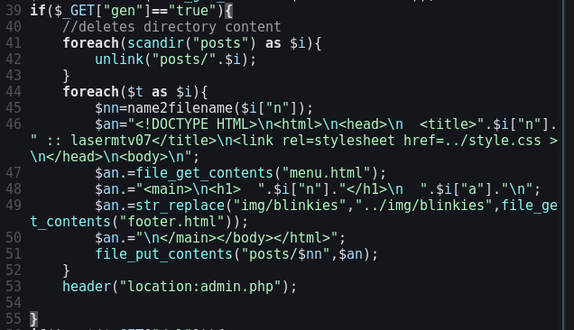
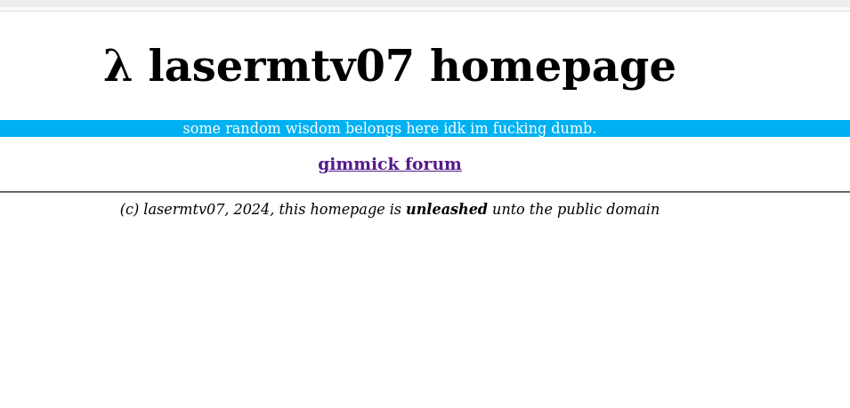

Writing a website in under 24 hours!
07/07/2024 03:07Hi!
Okay, I'll admit, this is a bit of a clickbait, since I started this project at about 23 (11PM) the day after yesterday and currently it's about 3(AM) well.. today, but still, I worked less than 24 hours net time on this, and this website features a working static
site generator (in about 12 lines of code):

Why tho?
Well, isn't it kinda obvoius? I study CS and databases, so I though having a website is gonna be cool! As of why I made it from scratch, it was quicker to write my custom CMS than learning one for my purposes :/
What tech stack did you use?
Well, I am a simple man, so I would say, very simple. I used PHP's serialize as my database software, since using a more complex one like SqLite would be more annoying. Yeah, I am using PHP, the greatest programming language ever invented. File uploading is done with specific UI (which I intend to fix in the future - though with me - probably never). For WYWSIG editor, I use tinymce, because it's simplier than writing one from scratch, and I use vanilla HTML and CSS.
Is this all?
Well, no. Unless I decide to be a lazy loser (like I am), I plan on adding stuff like dark mode, RSS, polishing it a bit, etc. For now, it's only because it's better than my previous website:

The GitHub is public, have fun.
(c) lasermtv07, 2024 in public domain.